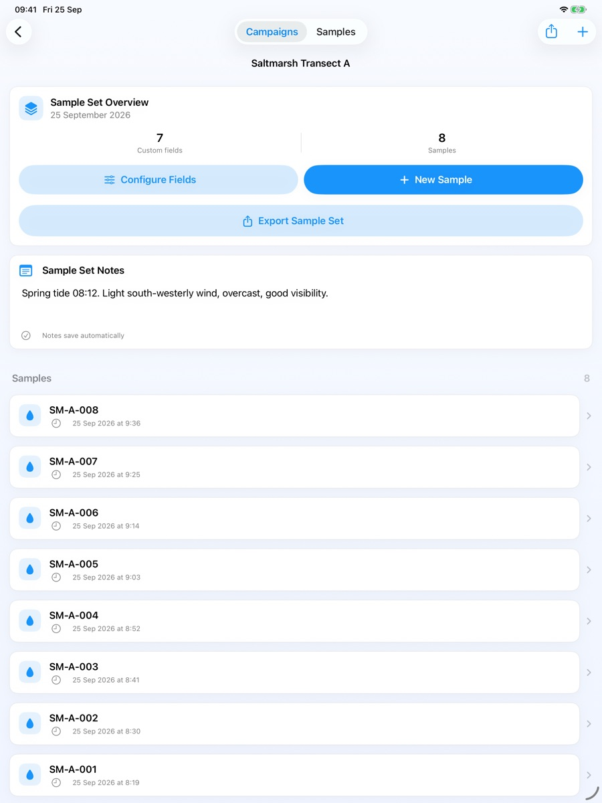

Fieldwork guide / 01
How to collect field data offline on iPhone and iPad
A useful field record keeps the measurement and its context together. Here is a practical workflow for preparing forms, collecting observations without a connection, and bringing a separate copy home.

1. Prepare before leaving
Install the app while you have a connection and check available device storage, battery and the permissions you need. Open Campaigns and create a campaign for the project, then a sample set for a related group of observations. A campaign might represent a field course; a sample set might represent one site visit.
Open the sample set and choose Configure Fields. Decide what belongs in every record: perhaps a site code, measurement with units, longer description, photograph, audio recording and location. Our survey form guide walks through an example.
Agree a naming convention before the trip. Names such as Site_A_001 are easier to compare with physical labels and exported attachments than a collection of unnamed records. This is a workflow convention, not an automatic numbering feature.
2. Try the workflow offline
Use a separate practice campaign so test observations cannot be mistaken for fieldwork. Turn off internet connectivity and work through the same steps you expect to use outside:
- Create and save a sample with a number and a note.
- Add a photograph and a short audio recording, then check the saved image and listen to playback.
- If using location, confirm the coordinates were actually captured. Permission and a usable device location fix are still needed; location availability and accuracy are not guaranteed.
- Close and reopen the record to check what was saved.
- Prepare an export and save it to a local destination in Files. Cloud destinations may be unavailable without a connection.
This rehearsal also catches practical issues such as unclear field names, units that do not match your protocol, or a recording that is hard to hear outdoors. Use your project's own sampling and quality-control procedures; the app does not validate a scientific method.
3. Collect a complete record
Choose New Sample in the appropriate set. Give it a clear name, check its Recorded date and time, enter your measurements and attach the context you need. Finish saving before moving on to the next observation.
Keep number fields numeric and use the configured units consistently. Record uncertainty, unusual conditions or departures from your method in notes. A photo or audio note can preserve context, but should not replace a measurement you need in a structured column later.
Review a few saved records during the day. Check that photographs are readable, recordings contain the intended sound and each observation is in the correct sample set. Protect the device itself: offline storage is useful, but a lost or damaged phone can still mean lost work.
4. Export and back up separately
Use a sample set's export control to create a CSV for analysis, or a ZIP Archive to keep its spreadsheet, photographs and recordings together. See how to export field data to Excel for the differences.
For a restorable copy of the app's data, open the Data Tools menu on Campaigns, choose Backup & Restore, then Create Complete Backup. Save the resulting archive and, when practical, keep a copy somewhere separate from the collection device.
For details of on-device storage, permissions and sharing, read the privacy policy. This guide describes public version 1.2 and does not promise cloud synchronisation or offline background maps.